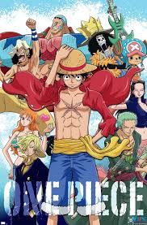
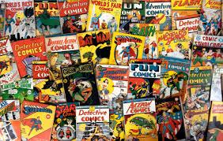

Books, Videos, and More!
Expand your nerdy universe through stories, screen, and song!
The Wider World of Nerd Culture
Being a nerd is not just about games — it is a rich, creative culture that spans books, comics, anime, podcasts, and much more. Some of the greatest fantasy and sci-fi worlds ever imagined were born on the written page before they ever appeared on a screen. Whether you prefer to curl up with a novel, binge a new anime series, or listen to a podcast while commuting, there has never been a better time to dive deeper into the things you love.
This page is your guide to the books, videos, shows, and media that the NerdHub community recommends for anyone looking to explore the imaginative side of geek culture.

Must-Read Books & Comics
- The Hobbit by J.R.R. Tolkien – The book that started it all for modern fantasy. Perfect for readers of all ages.
- Ender's Game by Orson Scott Card – A classic sci-fi story about a boy trained to save humanity from alien invasion. Ages 10+.
- Bone by Jeff Smith – A hilarious, adventurous comic series beloved by kids and adults. Great for new comic readers.
- Ms. Marvel (Marvel Comics) – A fun, modern superhero origin story featuring teenager Kamala Khan. Very family-friendly.
- Percy Jackson & the Olympians by Rick Riordan – Greek mythology meets modern adventure. A gateway book for many young fantasy readers.
- Dune by Frank Herbert – Epic science fiction for older teens and adults. One of the greatest sci-fi novels ever written.
Anime for Every Taste
Anime is Japanese animation with a wide range of genres, art styles, and stories. Here are some great starting points:
| Show | Genre | Age Guide |
|---|---|---|
| My Neighbor Totoro | Family / Adventure | All ages |
| Pokémon | Adventure / Action | All ages |
| Fullmetal Alchemist: Brotherhood | Action / Drama | 13+ |
| My Hero Academia | Superhero / Action | 10+ |
| Spy x Family | Comedy / Action | All ages |
| Attack on Titan | Action / Drama | 17+ |
YouTube Channels & Podcasts
The internet is full of great nerd content. These are some of the most popular and welcoming channels and podcasts for newcomers to nerd culture:
Critical Role
A group of professional voice actors playing D&D. The most-watched TTRPG show in the world. A wonderful gateway into tabletop gaming.
Drawfee Show
Artists draw ridiculous things in this hilarious, family-friendly comedy channel. Great for anyone who loves art and humor.
Crunchyroll
The premier streaming service for anime. Hosts thousands of shows with new simulcast episodes every week.
Geek & Sundry
A YouTube channel and community celebrating board games, tabletop RPGs, comics, and all aspects of geek culture.
Nerd Culture Movies & TV Shows
Some of the biggest entertainment franchises in history were born from nerdy source material. Here are some timeless picks that are great for the whole family:
- The Lord of the Rings Trilogy – Peter Jackson's legendary adaptation of Tolkien's epic fantasy novels.
- Star Wars (Original Trilogy) – The films that launched a thousand fandoms. Episodes IV, V, and VI are still the best starting point.
- Spider-Man: Into the Spider-Verse – A visually stunning animated film that celebrates comics, diversity, and heroism. All ages.
- Stranger Things (Netflix) – A love letter to 80s sci-fi and horror. Featuring D&D prominently! Ages 13+.
- Dungeons & Dragons: Honor Among Thieves – A fun, action-filled movie set in the D&D universe. Great for families. Rated PG-13.

Anime Poster Art
Comic Book CollectionStart a Nerd Book Club!
One of the best ways to enjoy nerdy books and media is with other people. Here are some tips for starting or joining a nerd book club:
- Choose a book, comic, or manga series everyone agrees on and set a reading pace (one chapter a week works well).
- Use Discord servers dedicated to the book or series to discuss chapters online.
- Local libraries often host fantasy and sci-fi book clubs — check your library's event calendar.
- Goodreads is a free website where you can track what you have read and join group reading challenges.
Useful Links
- Crunchyroll – Stream thousands of anime series
- Goodreads – Track books, find recommendations, join clubs
- Critical Role – Watch D&D played by professional voice actors
- Marvel Comics – Browse and read Marvel comics online